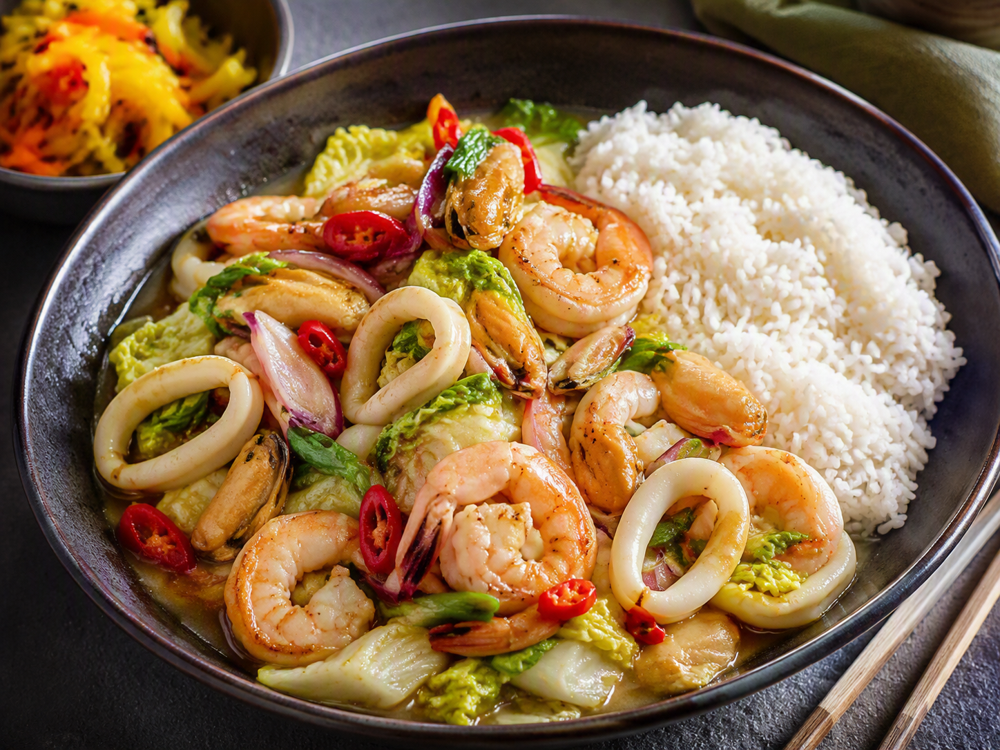

Zondag · Vis
Roerbak met zeevruchten, Chinese kool, atjar en rijst
Gezonde gezinsmaaltijd voor drie personen: roerbak met zeevruchten, chinese kool, atjar en rijst.

Ingrediënten
- 190 g zeevruchtenmix, ontdooid en droog gedept
- 250 g rijst
- 1 kleine Chinese kool, in repen
- 1 rode peper, fijngesneden
- 1 ui, in halve ringen
- 1 teen knoflook, fijngehakt
- 1 el oestersaus
- 1 el limoensap
- 1 el olie
- 150 g atjar tjampoer, uitgelekt
Bereiding
- Kook de rijst volgens de verpakking.
- Verhit een wok zeer goed. Bak de zeevruchten kort in de helft van de olie en schep ze uit de wok zodra ze net gaar zijn.
- Voeg de resterende olie toe en roerbak ui, knoflook, rode peper en Chinese kool 5 tot 7 minuten.
- Voeg oestersaus en limoensap toe. Schep de zeevruchten terug en warm maximaal 1 minuut door.
- Serveer met rijst en atjar tjampoer apart erbij.